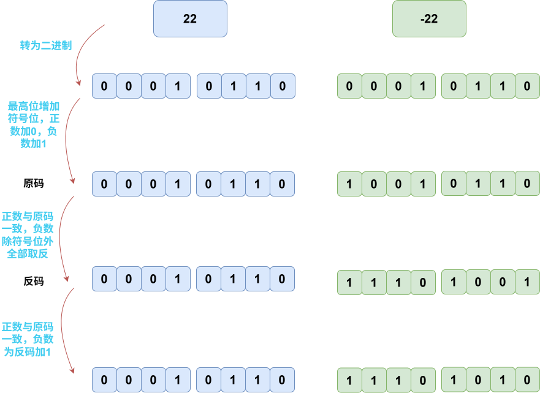
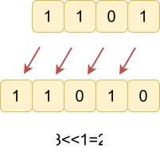
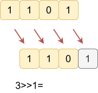

位(Bit)：计算机最小存储单位，相当于一个二进制位。
字节(Byte)：一个字节等于8位。
在计算机中，所有数据最终都以 二进制（Binary） 的形式存储和处理。编码就是一种数字表示方法。
原码是最直观的表示方法，它直接用二进制数表示一个数，包括正负号。在原码中，最高位（最左边的位）是符号位，0000 0101，而 1000 1101。
反码主要用于表示负数。对于正数，其反码与其原码相同。对于负数，其反码是将原码除符号位外的所有位取反（1111 1010。
补码是计算机中最常用的表示方法，用于进行二进制加法运算。对于正数，其补码与其原码相同。对于负数，其补码是其反码加 1111 1011。

练习：编码计算
两者都为
运算结果才为 ，否则为 。
| A | B | A & B |
|---|---|---|
| 0 | 0 | 0 |
| 0 | 1 | 0 |
| 1 | 0 | 0 |
| 1 | 1 | 1 |
两者至少一个为
运算结果为 ，否则为 。
| A | B | A | B |
|---|---|---|
| 0 | 0 | 0 |
| 0 | 1 | 1 |
| 1 | 0 | 1 |
| 1 | 1 | 1 |
两者不同 运算结果为
，否则为 。
| A | B | A ^ B |
|---|---|---|
| 0 | 0 | 0 |
| 0 | 1 | 1 |
| 1 | 0 | 1 |
| 1 | 1 | 0 |
性质：
a ^ a = 0
a ^ 0 = a
a ^ b ^ a = b
变 ， 变 。
二进制数整体左移一位，低位补
n<<k 相当于
1<<n 表示

二进制数整体右移一位，舍去低位。相当于结果除以
n>>k 相当于
